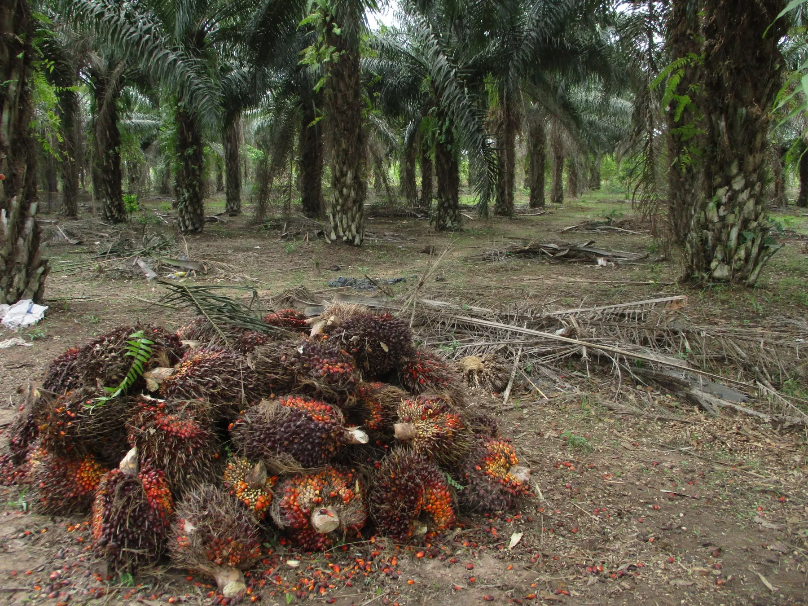
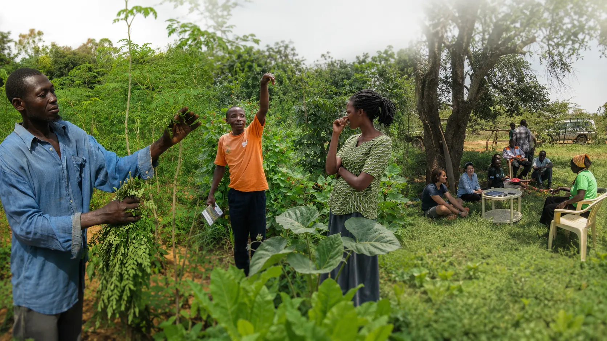
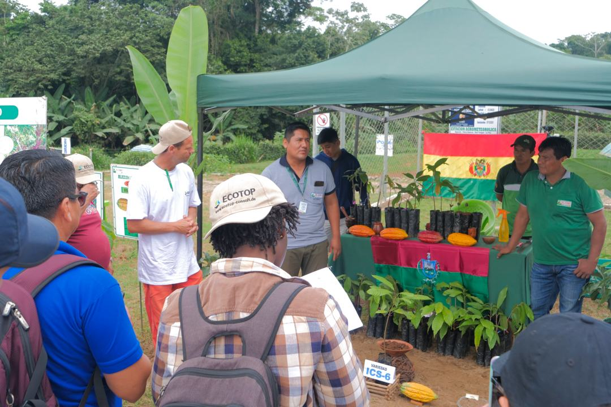
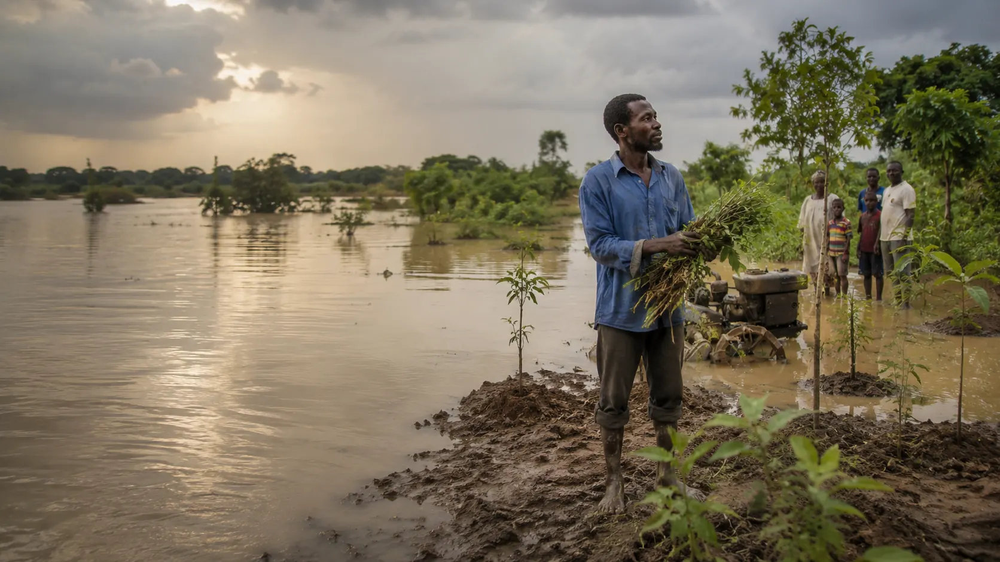
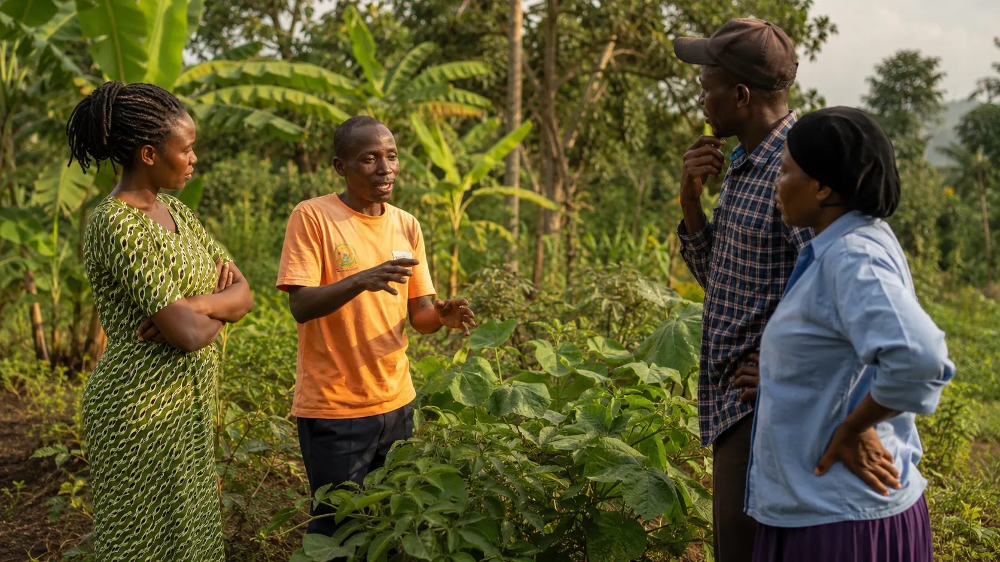

01
Define project scope
Set location, objectives, species assumptions, financial settings and project parameters before modelling starts.

Credible projections for environmental impact and farmer returns, built with specialised expertise, local data and scientific rigor.
Key performance indicators directly linking carbon, finance, production, water, biodiversity and livelihoods.
Agroforestry scenario projections for long term planning, investment cases and de risking.
Species and inputs in the CAFS database for local calibration and science backed modelling.

The FarmTree Platform is a software model and online interface created to design agroforestry scenarios and project their impact on carbon, financial and environmental indicators.
FarmTree helps organisations move from expert led planning to project capture, staff training and independent platform operation.

Set location, objectives, species assumptions, financial settings and project parameters before modelling starts.
FarmTree communicates the platform as a structured journey, from early design decisions to field learning, scaling and reporting. This follows Frank's request to make the commercial value easier to understand.
Set location, objectives, species assumptions, labour, yields, finance and risk parameters before committing field resources.
Use data from implementation to improve assumptions, monitor outcomes and support better project conversations.
Translate agroforestry work into carbon, finance, biodiversity, farmer income and programme level reporting narratives.
Selected organisations and programmes connected to FarmTree projects and platform conversations.



FarmTree helps organisations move from farm level plans to landscape impact, portfolio scaling and evidence based communication with investors, farmers and partners.
FarmTree connects responsible companies, investors and implementation partners with projects and landscapes through scenario based data. The platform translates real field data into carbon, finance, hydrology and biodiversity insights that make agroforestry decisions more transparent and investment ready.

One information base for project design, monitoring and reporting.

Model farmer income, labour needs, yields and long term value.

Estimate carbon, water, biodiversity, soil and erosion indicators.

Translate complex agroforestry assumptions into investment ready narratives.
These images bring the prototype closer to the current FarmTree website by showing the practical context behind agroforestry planning, climate risk, cocoa landscapes, farmer livelihoods and field based data collection.
 Cocoa landscapes and field teams
Cocoa landscapes and field teams Cocoa production context
Cocoa production context
Climate and landscape risk
Farmer knowledge and field data Local consultation and decision support
Local consultation and decision supportFrank asked for a rotating project layer. In this controlled version the cards stay clean and preview-ready, while detailed facts can be filled once FarmTree confirms the numbers, quotes and permissions.
Placeholder case showing how FarmTree can support programme design, M&E structure and investment reporting for institutional partners.
Proof card for carbon oriented agroforestry planning, with space for scope, FarmTree's contribution and confirmed result.
A cocoa focused project story for shade tree density, farmer income, yields, carbon and resilience outcomes.
A water authorities case placeholder connecting agroforestry planning with hydrology, landscape risk and public sector decisions.
Instead of making the site complicated, the main buyer journeys are added as clean entry cards and dedicated pages inside the same approved visual system.
De-risk agroforestry portfolios with bankable scenario analysis, risk framing and investment-ready reporting.
Plan programme-level agroforestry interventions with M&E logic, GCF alignment and donor reporting needs in mind.
Reduce manual planning and reporting burden while supporting field teams with clearer scenario conversations.
For teams that need a fast investment or project scenario review.
For organisations evaluating FarmTree as a planning and reporting workflow.
For full programme support, training, roll-out and monitoring.
A selection of short user reflections from project and platform conversations.
“We know very little of agroforestry options for a particular local context. The FarmTree tool to generate location-specific scenarios will be super helpful!”
“FarmTree helps generate a range of context-specific scenarios backed by projected income, while also supporting discussion on labour and inputs required.”
“The platform makes agroforestry options easier to compare, explain and communicate with project stakeholders.”
“Scenario-based modelling helps turn complex land-use decisions into clearer, investment-ready conversations.”
“FarmTree connects environmental indicators, farmer income and long-term project planning in one practical decision tool.”
“We know very little of agroforestry options for a particular local context. The FarmTree tool to generate location-specific scenarios will be super helpful!”
“FarmTree helps generate a range of context-specific scenarios backed by projected income, while also supporting discussion on labour and inputs required.”
“The platform makes agroforestry options easier to compare, explain and communicate with project stakeholders.”
“Scenario-based modelling helps turn complex land-use decisions into clearer, investment-ready conversations.”
“FarmTree connects environmental indicators, farmer income and long-term project planning in one practical decision tool.”
“FarmTree connects environmental indicators, farmer income and long-term project planning in one practical decision tool.”
“Scenario-based modelling helps turn complex land-use decisions into clearer, investment-ready conversations.”
“The platform makes agroforestry options easier to compare, explain and communicate with project stakeholders.”
“FarmTree helps generate a range of context-specific scenarios backed by projected income, while also supporting discussion on labour and inputs required.”
“We know very little of agroforestry options for a particular local context. The FarmTree tool to generate location-specific scenarios will be super helpful!”
“FarmTree connects environmental indicators, farmer income and long-term project planning in one practical decision tool.”
“Scenario-based modelling helps turn complex land-use decisions into clearer, investment-ready conversations.”
“The platform makes agroforestry options easier to compare, explain and communicate with project stakeholders.”
“FarmTree helps generate a range of context-specific scenarios backed by projected income, while also supporting discussion on labour and inputs required.”
“We know very little of agroforestry options for a particular local context. The FarmTree tool to generate location-specific scenarios will be super helpful!”
Find clear answers about FarmTree models, scenario planning, impact indicators, reporting and investment use cases.

Design agroforestry scenarios and project carbon, financial and environmental indicators for up to 50 years.

The FarmTree model is composed of interconnected sub models simulating soil, nutrients, water, plant growth, production, carbon, labour and finance.
Biomass accumulation, carbon stock, Carbon Removal Units and carbon revenue by species.
Yields, production costs, revenues, cash flows, profitability and labour needs.
Water balance, soil organic matter, nutrient flows, erosion and biodiversity.
Compare multiple project areas and portfolio wide performance.

We design credible farm plans and investment cases that de risk your project. What takes consultants months, you will generate in hours.
Your staff learn to collect project data and operate FarmTree, while the team calibrates local species, prices and conditions.
Manage projections and monitoring across multiple projects, regions and countries with comparable impact metrics.

Active FarmTree Tool users.
Projects supported with FarmTree methods and modelling.
Agricultural regions impacted.
Watershed reforestation and restoration planning.
Carbon sequestration projections across Asia, Africa and Latin America.
Entrepreneurial agroforestry strategy and landscape planning.
Integrated pest management in oil palm systems.

Compare shade systems and understand their effect on production and resilience.
Model tree combinations, cocoa systems and local conditions.
Understand how scenarios affect yields, costs and cash flow.
Estimate long term carbon value within cocoa supply chains.
Get a sneak peek of the FarmTree Platform features and functions. This page collects the platform tutorial topics from the current FarmTree user videos page in the new visual system.
Get a sneak peek of the FarmTree Platform features and functions.
Learn how to manage your team on the FarmTree Platform, from inviting new members to tracking roles and removing inactive users.
Explore the Multiplot Tool on FarmTree, run and analyse hundreds of scenarios at once, select metrics, and export results with ease. Built for scale and speed.
Get started with the FarmTree Tool, build agroforestry scenarios, define plots, add species, and run detailed simulations with just a few clicks. Flexible, data-rich, and intuitive.
Use the FarmTree Comparison Tool to evaluate multiple agroforestry scenarios side by side, compare carbon, yields, water balance, revenues, and more to find the best fit.
Organise, search, and manage all your agroforestry scenarios with ease on the FarmTree Platform. Create folders, tag scenarios, and collaborate smoothly.
Learn how to upload, create, and manage plot polygons on the FarmTree Platform, organise locations, extract data, and use them in your scenarios.
Understand uncertainty margins for the carbon sequestration potential of different tree species.
Optimize soil fertility parameters in the tool for effective soil health management in agroforestry.
How to create a FarmTree Tool Demo account.
Key tool features and functionalities to design a scenario.
How to plan agroforestry interventions for future-proof watershed management.
Conoce nuestras herramientas digitales para la gestión y evaluación de proyectos de agroforestería.
How to examine the production potential of plant species based on growth limiting factors.
Understanding projections on biomass production and how they relate to carbon sequestration.
How to link your scenario to site-specific climate data and explore the impact of climate change.
Understanding the effect of land use on biodiversity.
How to define key settings, prices, costs and labour, and review their impact on the financial projections.
How to adjust species planting densities in intercropping scenarios and review their effect on cover.
How to explore the effect of tree planting on water inflows and outflows from the soil layers.
How to simulate irrigation application and review its effect on the water requirements of species.

A multidisciplinary team combining agroforestry science, modelling, software, field knowledge and project experience.

FarmTree Team

Agroforestry & Modelling

Agroforestry Specialist

Agroforestry Specialist

Co-founder / Partnerships

FarmTree Team

FarmTree Team

FarmTree Team

FarmTree Team

FarmTree Team

FarmTree Team

Assist in keeping FarmTree financial systems up to date.
Contribute to modelling capabilities for agroforestry and erosion.
Work with species data and agroforestry restoration databases.
Learn, develop and join an international dynamic team.

Plus Ultra Building, Bronland 12C-1, 6708 WH Wageningen, The Netherlands. Call +31 (0)630 884 640 or email info@farmtree.earth.
Contact us about anything related to our company or services. We will do our best to get back to you as soon as possible.
Please fill in the fields below and submit your interest in FarmTree services or platform access.

This page can include contributors, research partners, funders and project acknowledgements connected to FarmTree methodology and platform development.

This page can explain platform access, model use, data responsibilities, privacy, permissions and licensing arrangements for FarmTree Platform users.
FarmTree helps investors and climate finance teams compare agroforestry scenarios, evaluate long term project value and prepare clearer investment narratives.
Book an investment case review to test whether a project is ready for deeper modelling.
This page translates FarmTree into the language of programme design, GCF alignment, M&E frameworks and donor reporting.
Use this path for donor oriented conversations and institutional programme scoping.
FarmTree can help implementing partners move from fragmented manual reporting to more consistent project assumptions, field learning and stakeholder communication.
Map an implementation workflow and identify where FarmTree can support daily project work.
FarmTree pricing should stay consultative in the preview. The goal is not to publish exact fees yet, but to reduce uncertainty by explaining the commercial model.
For defined modelling questions and investment case reviews.
For demo, onboarding and use-case specific platform access.
For training, roll-out, field workflows and ongoing monitoring support.
Placeholder page for the client context, challenge, FarmTree role, key outputs and result. Final details need confirmation from FarmTree.
Placeholder page for scope, FarmTree contribution and confirmed result once Frank provides the project facts.
Placeholder page for cocoa project context, FarmTree's role and the key outcome that should feature in the homepage carousel.
Placeholder page for the water authorities project, FarmTree's role and headline project outcome.